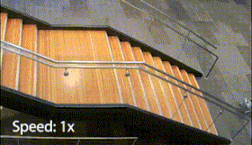

|
Changyi Lin I am a third-year PhD student at CMU Safe AI Lab, advised by Prof. Ding Zhao. I am fortunate to work closely with Dr. Yuxiang Yang and collaborate with Google DeepMind Robotics team. I have spent a wonderful summer as a research intern at Bosch AI. I received dual bachelor's degrees in ME and CS from Huazhong University of Science and Technology (HUST). After that, I spent a gap year exploring robotics research at Tsinghua Embodied AI Lab, advised by Prof. Huazhe Xu. Email | Google Scholar | Github | Twitter | LinkedIn |
ResearchI am passionate about Robotics and AI, with a research focus on multimodal policy learning, whole-body control, and tactile sensing. My goal is to develop robotic systems that can fully perceive, deeply understand, and safely interact with the physical world. |

|
LocoTouch: Learning Dynamic Quadrupedal Transport with Tactile Sensing
Changyi Lin, Yuxin Ray Song, Boda Huo, Mingyang Yu, Yikai Wang, Shiqi Liu, Yuxiang Yang, Wenhao Yu, Tingnan Zhang, Jie Tan, Yiyue Luo, and Ding Zhao CoRL 2025 paper | website | video | code | X | media( IEEE Spectrum, CMU Engineering News) Tactile sensing unlocks a new level of contact-rich interaction for legged robots! Equipped with a high-density distributed tactile sensor, our quadrupedal robot can transport everyday objects without mounting or strapping. The transport policy achieves zero-shot sim-to-real transfer, featuring two task-agnostic components: high-fidelity tactile simulation and robust, symmetric, frequency-adaptive gaits. |

|
LocoMan: Advancing Versatile Quadrupedal Dexterity with Lightweight Loco-Manipulators Changyi Lin, Xingyu Liu, Yuxiang Yang, Yaru Niu, Wenhao Yu, Tingnan Zhang, Jie Tan, Byron Boots, and Ding Zhao IROS 2024 (Featured Cover on IEEE Spectrum) paper | website | video | hardware & code | mac-mini setup | X | media(IEEE Spectrum Cover, TechXplore, CMU Engineering News) Limbs are not just for walking, they can be arms too! We reimagine quadrupedal limbs as 6-DoF arms by equipping them with custom-designed manipulators that mimic huma wrists. Powered by a unified whole-body controller, LocoMan can perform a wide range of dexterous manipulation tasks. |

|
LightTact: A Visual-Tactile Fingertip Sensor for Deformation-Independent Contact Sensing
Changyi Lin*, Boda Huo*, Mingyang Yu, Emily Ruppel, Bingqing Chen, Jonathan Francis, and Ding Zhao
Arxiv 2025
paper Physical contact is directly observable! |

|
9DTact: A Compact Vision-Based Tactile Sensor for Accurate 3D Shape Reconstruction and Generalizable 6D Force Estimation
Changyi Lin, Han Zhang, Jikai Xu, Lei Wu, and Huazhe Xu
RAL & ICRA 2024
paper | website | video | hardware & code | dataset | X | tutorial-en | tutorial-cn 9DTact = 3D Shape Reconstruction + 6D Force Estimation! Only white light! No markers! One-shot calibration! Easy fabrication! Open source! So many features to explore! Why not check out the website? |

|
DTact: A Vision-Based Tactile Sensor that Measures High-Resolution 3D Geometry Directly from Darkness
Changyi Lin, Ziqi Lin, Shaoxiong Wang, and Huazhe Xu
ICRA 2023
paper | website | video | hardware & code | X | media(Technology) The deeper you press, the darker you see! We leverage the reflection property of translucent silicone to reconstruct 3D contact geometry using only white light. We also demonstrate its robustness and feasibility for non-planar contact surfaces. |
Collaborative Publications |

|
Human2LocoMan: Learning Versatile Quadrupedal Manipulation with Human Pretraining Yaru Niu, Yunzhe Zhang, Mingyang Yu, Changyi Lin, Chenhao Li, Yikai Wang, Yuxiang Yang, Wenhao Yu, Tingnan Zhang, Zhenzhen Li, Jonathan Francis, Bingqing Chen, Jie Tan, and Ding Zhao RSS 2025 paper | website | video | code | X |
|
QuietPaw: Learning Quadrupedal Locomotion with Versatile Noise Preference Alignment Yuyou Zhang, Yihang Yao, Shiqi Liu, Yaru Niu, Changyi Lin, Yuxiang Yang, Wenhao Yu, Tingnan Zhang, Jie Tan, and Ding Zhao IROS 2025 paper |
|

|
DTactive: A Vision-Based Tactile Sensor with Active Surface
Jikai Xu*, Lei Wu*, Changyi Lin, Ding Zhao, and Huazhe Xu
IROS 2025
paper | website | hardware | X |
|  |
Agile Continuous Jumping in Discontinuous Terrains
Yuxiang Yang, Guanya Shi, Changyi Lin, Xiangyun Meng, Rosario Scalise, Mateo Guaman Castro, Wenhao Yu, Tingnan Zhang, Ding Zhao, Jie Tan, Byron Boots ICRA 2025 paper | website | video | code | X |

|
ArrayBot: Reinforcement Learning for Generalizable Distributed Manipulation through Touch
Zhengrong Xue*, Han Zhang*, Jingwen Cheng, Zhengmao He, Yuanchen Ju, Changyi Lin, Gu Zhang, and Huazhe Xu ICRA 2024 paper | website | video | code | X |
Projects |
|
Generalizable BeamWalking for Legged Robots with Reinforcement Learning
Course Project for Intro to Robot Learning(16-831 by Deepak Pathak) Techniques: Reinforcement Learning, Curriculum Learning, Computer Vision |
|
|
RoboMaster Robotics Competition
Engineer Robot 2019, Dart System 2020, SLAM System 2021 Techniques: Mechanical Design, Control, SLAM, Computer Vision |
Talks
|
Academic Services
|
|
Template from Jon Barron's website. |